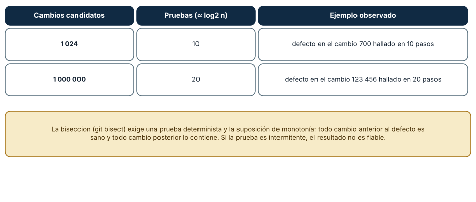
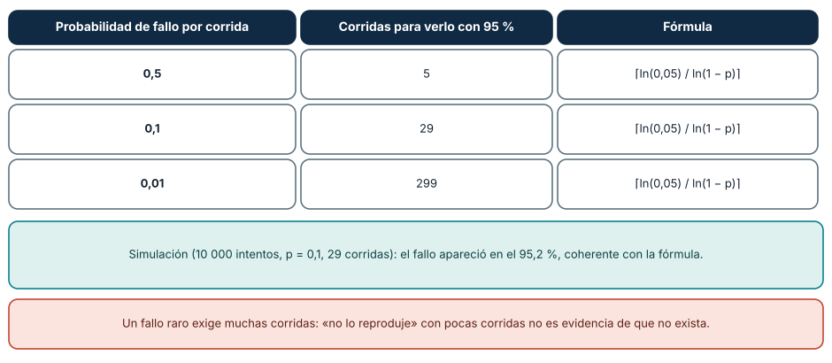
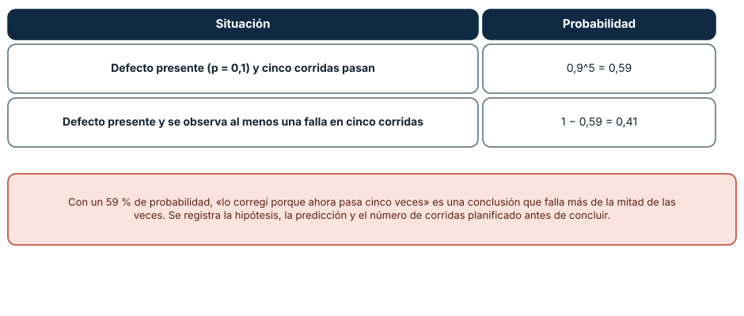

← SE-057 — Modelado de estado, transiciones y eventos · ↑ Parte 04 · 📚 Índice completo · 🌐 Portal · SE-059 — Taller: descomponer un problema ambiguo →
Punto profesional y fundamento pedagógico
Punto profesional. La clase existe para resolver problemas registrando hipótesis rivales y observaciones que realmente las discriminan.
Por qué aparece aquí. Se sitúa después de Modelado de estado, transiciones y eventos y antes de Taller: descomponer un problema ambiguo: convierte el conocimiento anterior en una decisión observable que la clase siguiente podrá reutilizar. La continuidad se comprueba en el artefacto, no por compartir vocabulario.
Error conceptual que debe corregir. Cambiar código antes de formular una explicación falsable.
Secuencia de aprendizaje. Antes de leer la solución, el estudiante predice el resultado del caso normal y del error conceptual anterior. Luego explica un caso resuelto paso a paso, construye un contraejemplo que cambie la decisión y, sin consultar el texto, reconstruye el mecanismo y lo aplica a una entrada nueva. La secuencia usa predicción, explicación propia, contraste y recuperación. ICAP distingue participación de construcción de conocimiento; How People Learn II exige conectar conocimiento previo, contexto y transferencia; la práctica de recuperación respalda producir de nuevo la explicación tras una demora; y Education for Life and Work exige devolución que explique la causa del error.
Evidencia de aprendizaje. Hypothesis-log.md con síntoma, predicción, experimento, resultado y descarte. Debe contener predicción previa, observación, explicación causal, contraejemplo, criterio de aceptación y una nota de qué dato haría cambiar la conclusión.
Límite de la conclusión. No encontrar causa en la ventana observada no valida la hipótesis restante.
Trazabilidad fuente → afirmación
| Fuente primaria u oficial | Afirmación que respalda | Lo que no prueba |
|---|---|---|
| SWEBOK Guide v4.0a | sitúa la decisión dentro de construcción, diseño, pruebas y práctica profesional de ingeniería de software | No demuestra por sí sola que el artefacto del estudiante sea correcto. |
| MIT 6.042J — Mathematics for Computer Science | aporta lógica, inducción, relaciones, grafos y técnicas de demostración aplicadas | No demuestra por sí sola que el artefacto del estudiante sea correcto. |
Antes de empezar
Esta clase continúa el modelo de decisión diagnóstica, que convierte la evidencia de la petición observable de extremo a extremo en una siguiente decisión explicable. Recupera SE-057: escribe qué artefacto dejó, qué supuesto permanece abierto y qué propiedad debe sobrevivir al nuevo modelo. La matemática se usa para restringir interpretaciones y encontrar errores; no como ornamentación.
Prerrequisitos
- Poder separar hecho, interpretación, hipótesis y decisión.
- Manejar tablas, diagramas y pseudocódigo legible; Python es opcional.
- Trabajar con datos sintéticos del caso del modelo de decisión diagnóstica y conservar cada versión en Git.
Problema auténtico
Ante un incidente, el equipo del modelo de decisión diagnóstica prueba comandos conocidos y conserva solo la solución final. Sin registro no puede explicar por qué descartó alternativas ni detectar que cambió varias variables. Se necesita un método iterativo y auditable.
Objetivos observables
Al finalizar podrás explicar el mecanismo con ejemplo y contraejemplo; construir un modelo con dominio y límites; derivar una prueba que pueda refutarlo; comparar al menos dos representaciones; y entregar una decisión cuya evidencia pueda revisar otra persona.
Mapa conceptual
Ver la notación fuente del diagrama
flowchart LR
P[Problema situado] --> A[Abstracción explícita]
A --> R[Reglas e invariantes]
R --> S[Solución o estrategia]
S --> C[Casos y contraejemplos]
C --> E[Evidencia de aceptación]
E -->|modelo insuficiente| AEl mapa separa el problema de su representación. Los casos no reemplazan reglas; las reglas no prueban que el problema esté bien encuadrado. La pregunta de esta clase es: ¿Qué evidencia aumentaría o reduciría la confianza en cada hipótesis?
Temas y por qué importan
| Lente | Pregunta | Evidencia |
|---|---|---|
| dominio | ¿qué entradas y estados existen? | vocabulario y particiones |
| estructura | ¿qué relaciones se conservan? | modelo interpretado |
| regla | ¿qué debe ser cierto? | contrato o invariante |
| estrategia | ¿qué pasos producen el resultado? | pseudocódigo y traza |
| límite | ¿dónde falla el argumento? | contraejemplo y caso límite |
Conceptos y decisiones
1. Encuadre y reproducción
Se define esperado versus observado, impacto, alcance, inicio y cambios recientes. Una reproducción mínima conserva el síntoma con menos componentes. Si no se reproduce, eso es evidencia sobre condiciones, no prueba de que el incidente desapareció.
2. Hipótesis contrastable
Una hipótesis propone un mecanismo que predice señales. Debe poder perder: «algo de red» no es falsable; «el resolver excede 500 ms y domina el total» predice tiempos y un resultado bajo override. Se mantienen alternativas para evitar anclaje.
3. Selección de prueba
La siguiente prueba maximiza información esperada respecto a costo y riesgo. Una prueba confirmatoria puede ser menos útil que una que separa dos causas. Se prefiere observación antes de intervención, y cambios reversibles antes de amplios.
4. Registro de hipótesis
Cada entrada conserva timestamp, observación, interpretación, hipótesis, predicción, prueba, resultado y decisión. La confianza no es un porcentaje inventado: se expresa por evidencia a favor, en contra y faltante. Las hipótesis descartadas permanecen para revisión.
5. Cierre y prevención
Resolver síntoma no cierra análisis. Se confirma causa reproduciendo y retirando la intervención, se restaura estado, se identifica condición habilitante y se añade detección o guardrail. La narrativa distingue causa técnica de factores de proceso.
Bisección: la hipótesis que parte el espacio
Localizar el cambio que introdujo un defecto entre 1024 modificaciones ordenadas requiere 10 pruebas, y entre un millón, 20: cada prueba descarta la mitad de los candidatos (log₂ n). En una simulación, un defecto en el cambio 700 de 1024 se halló en 10 pasos, y uno en el cambio 123 456 de un millón, en 20. git bisect automatiza el procedimiento. Exige dos condiciones: una prueba determinista y la suposición de monotonía (todo cambio anterior al defecto es sano y todo posterior lo contiene). Si alguna falla, el resultado engaña.

Cómo leer la figura. La tabla relaciona el número de candidatos con las pruebas necesarias y un ejemplo; el cuadro dice cuándo falla. Dónde deja de valer: si hay dos defectos, o el defecto depende de la combinación de dos cambios, la bisección converge a un cambio que no es la causa completa.
Fallos intermitentes: cuántas veces repetir
Si un fallo ocurre en una fracción p de las corridas, para observarlo con 95 % de confianza hacen falta ⌈ln(0,05)/ln(1−p)⌉ corridas: 5 si p = 0,5; 29 si p = 0,1 y 299 si p = 0,01. Una simulación de 10 000 intentos con p = 0,1 y 29 corridas lo observó en el 95,2 % de los casos, coherente con la fórmula. Decir «no lo pude reproducir» tras pocas corridas no es evidencia de que el defecto no exista: un fallo raro exige muchas corridas, y esa cantidad se calcula antes de empezar.

Cómo leer la figura. Cada fila relaciona la probabilidad del fallo con las corridas; el cuadro verde reporta la simulación. Dónde deja de valer: supone corridas independientes con probabilidad constante; si el fallo depende del estado acumulado o de la hora, la fórmula subestima o sobrestima.
La falsa confianza de «ahora pasa»
Si un fallo ocurre en el 10 % de las corridas, la probabilidad de que cinco corridas seguidas pasen aunque el defecto exista es 0,9⁵ = 0,59. Por tanto «lo corregí porque ahora pasa cinco veces» es una conclusión equivocada más de la mitad de las veces. Antes de concluir se registran la hipótesis, la predicción y el número de corridas planificado, y se decide el criterio de éxito *antes* de ver el resultado. Es la diferencia entre depurar con un método y adivinar con ceremonias.

Cómo leer la figura. La tabla compara la probabilidad de pasar y la de ver un fallo. Dónde deja de valer: con una probabilidad desconocida no se puede calcular; se estima con corridas previas o se asume un valor conservador.
Definiciones de trabajo
- reproducción: procedimiento que vuelve a producir un síntoma bajo condiciones declaradas.
- hipótesis: explicación provisional con predicciones contrastables.
- falsable: capaz de resultar incompatible con una observación.
- primera divergencia: primer punto donde dos recorridos difieren.
- guardrail: control que previene o limita una condición de fallo.
Las definiciones fijan el uso en el modelo de decisión diagnóstica. Si una fuente usa otra convención, documenta la traducción. Una palabra definida no equivale a una propiedad demostrada.
Ejemplo mínimo
A partir de un timeout, escribe tres hipótesis que predigan fases distintas. Para cada una elige una señal que la apoye y otra que la refute; ordena pruebas por información/costo.
Antes de resolver, predice el resultado y la propiedad que debería conservarse. Después marca qué parte del resultado procede de la regla y cuál depende del ejemplo.
Ejemplo profesional
El modelo de decisión diagnóstica genera un registro append-only y no sobreescribe la primera interpretación. Cuando cambia una hipótesis, enlaza la evidencia. El informe final muestra la primera divergencia y alternativas descartadas, evitando una historia retrospectiva perfecta.
La entrega profesional hace visible el costo de simplificar. Incluye al menos una alternativa descartada y la condición que obligaría a revisar la decisión.
Práctica guiada
- define esperado, observado y alcance.
- produce tres hipótesis mecanísticas.
- predice señales opuestas.
- ejecuta una prueba reversible.
- actualiza el registro y confirma recuperación.
- solicita una revisión adversarial y corrige el modelo sin borrar la versión que falló.
Ejercicios
- Bisección: calcula cuántas pruebas se necesitan para 5000 cambios y simula el hallazgo de un defecto en el 3200.
- Corridas: calcula las corridas necesarias para ver con 99 % de confianza un fallo con p = 0,05.
- Falsa confianza: calcula la probabilidad de que diez corridas pasen con p = 0,1.
- Registro: escribe una hipótesis con predicción que la refute, la prueba y el criterio de éxito.
Reto verificable
Entrega problem.md, model.md y checks.md. Una persona revisora debe poder reconstruir dominio, supuestos, regla, resultado y límite; además debe encontrar qué caso refutaría la solución sin preguntarte oralmente.
Demostración guiada
- Declara el dominio y selecciona un caso pequeño calculable a mano.
- Ejecuta la estrategia paso a paso y conserva estados intermedios.
- Comprueba el resultado contra la definición, no contra intuición.
- Introduce el fallo controlado y localiza la primera regla violada.
- Repara el modelo y repite el caso original y el contraejemplo.
Preguntas frecuentes
¿Por qué la prueba debe ser determinista para bisecar?
Porque cada resultado separa el espacio en mitades. Si la prueba falla a veces sin que el defecto esté, la bisección descarta la mitad equivocada y el resultado no es confiable.
¿Qué hago con un defecto que depende de dos cambios?
La bisección encuentra el primer cambio en que el fallo es observable. Hay que analizar la interacción con una hipótesis explícita; no basta aceptar el resultado.
¿Cuántas corridas son suficientes?
Depende de la probabilidad estimada del fallo y de la confianza deseada. Se calcula con la fórmula y se registra antes de empezar.
¿Cómo registro una hipótesis?
Con el enunciado, la predicción observable que la refutaría, la prueba y el criterio de éxito. Un registro así evita ajustar la explicación al resultado.
Fallo controlado y diagnóstico
Cambia DNS, reinicia servicio y limpia caché al mismo tiempo. Aunque mejore, no puedes atribuir causa. Restaura, establece línea base y repite una variable por iteración.
Conserva el modelo fallido, la entrada que lo expone, la regla violada y la corrección. No ajustes solo el resultado esperado para hacer pasar el caso.
Reproduce la falsa confianza con una simulación propia. Escribe una función que falle con probabilidad 0,1 y ejecútala cinco veces; repite el experimento 10 000 veces y cuenta cuántas veces las cinco corridas pasan. Síntoma: en torno al 59 % de los experimentos pasan los cinco intentos aunque el defecto existe. Hipótesis: cinco corridas son insuficientes para p = 0,1. Prueba: sube a 29 corridas y mide que el fallo aparece en torno al 95 % de los experimentos. Conclusión: el número de corridas se decide con la probabilidad, no con la paciencia. Registra la semilla, las corridas y el resultado en checks.md, y rellena el registro de hipótesis, observaciones y descartes del laboratorio.
Errores comunes y cómo corregirlos
| Síntoma | Causa | Corrección |
|---|---|---|
| La bisección señala un cambio inocente | Prueba intermitente | Estabilizar la prueba o repetirla según la fórmula |
| «Ya no falla» tras tres corridas | Pocas repeticiones | Calcular el mínimo con la probabilidad |
| Se cambia la hipótesis tras ver el resultado | No se registró el criterio | Escribir predicción y éxito antes de ejecutar |
| El defecto aparece solo con otra combinación | Dos factores interactúan | Probar combinaciones, no cambios aislados |
| Se descarta una causa sin evidencia | Descarte implícito | Registrar el motivo y la prueba |
Entorno y archivos clave
work/SE-058/
├── problem.md # contexto, dominio, supuestos y exclusiones
├── model.md # definiciones, reglas, diagrama y estrategia
├── checks.md # ejemplos, contraejemplos y aceptación
└── review.md # objeciones y revisión del modeloEl pseudocódigo debe ser independiente de lenguaje y cada diagrama necesita explicación textual. Si usas código para explorar, registra versión, entrada y salida; no lo presentes automáticamente como producto de la clase.
Laboratorio integrado de la Parte 04
Convierte la timeline de la especificación contrastable en registro de hecho, interpretación, hipótesis rival, predicción y próxima prueba. Una observación contradictoria debe detener el modelo y abrir la revisión de premisas; no se elimina el dato adverso para conservar una narrativa limpia.
Seguridad, ética y accesibilidad
- usa incidentes sintéticos y evita convertir direcciones o usuarios en datos de práctica;
- trata autorización y privacidad como invariantes, no como pasos opcionales;
- registra a quién perjudica un falso positivo, falso negativo o prioridad automática;
- ofrece tablas y texto alternativo para diagramas y símbolos;
- define mecanismo de revisión humana y apelación para recomendaciones;
- no uses un modelo parcial para justificar una decisión irreversible.
Puente hacia el trabajo con agentes
Las salidas de un agente son intermitentes por naturaleza: la misma tarea puede resolverse bien o mal según la ejecución. Evaluar un cambio al prompt con una sola corrida repite la falsa confianza de esta clase. La cantidad de ejecuciones debe calcularse según la tasa de fallo esperada, y el criterio de éxito fijarse antes. Bisecar un cambio de comportamiento del agente entre versiones del modelo o del prompt exige pruebas deterministas o repetidas suficientes; de lo contrario se atribuye un efecto al azar.
Transferencia
Aplica el mecanismo a otro dominio y conserva la estructura del argumento, no los nombres del modelo de decisión diagnóstica. Explica qué dominio, invariante o medida cambia. Si el razonamiento deja de funcionar, identifica el supuesto que pertenecía al caso original.
Evaluación y evidencia
| Criterio | Para aprobar |
|---|---|
| precisión | dominio, términos y cuantificadores explícitos |
| mecanismo | pasos y relaciones explican el resultado |
| corrección | invariantes, casos o argumento adecuados a la afirmación |
| límites | contraejemplo, costo y supuestos visibles |
| revisión | trazabilidad y objeciones preservadas |
Completar archivos no concede aprobación. La evidencia debe sostener la afirmación exacta, y la revisión de otra persona debe poder contradecirla.
Fuentes
- SWEBOK Guide v4.0a — sitúa la decisión dentro de construcción, diseño, pruebas y práctica profesional de ingeniería de software.
- MIT 6.042J — Mathematics for Computer Science — aporta lógica, inducción, relaciones, grafos y técnicas de demostración aplicadas.
Los cursos y SWEBOK aportan definiciones y métodos; no validan automáticamente el modelo del modelo de decisión diagnóstica. Cada aplicación se sostiene con el artefacto y sus casos.
- Git:
git bisect: funcionamiento del procedimiento de búsqueda binaria de un cambio defectuoso. - Andreas Zeller, *Why Programs Fail* (Morgan Kaufmann): depuración sistemática, hipótesis y reducción de casos.
- Python:
randomy semillas reproducibles: reproducibilidad de las simulaciones de la Figura 2.
Límites y siguiente paso
El método reduce sesgos, no garantiza acceso a toda evidencia ni elimina incertidumbre. El taller siguiente lo aplica a un problema deliberadamente ambiguo.
Glosario
- reproducción: procedimiento que vuelve a producir un síntoma bajo condiciones declaradas.
- hipótesis: explicación provisional con predicciones contrastables.
- falsable: capaz de resultar incompatible con una observación.
- primera divergencia: primer punto donde dos recorridos difieren.
- guardrail: control que previene o limita una condición de fallo.
← SE-057 — Modelado de estado, transiciones y eventos · ↑ Parte 04 · 📚 Índice completo · 🌐 Portal · SE-059 — Taller: descomponer un problema ambiguo →